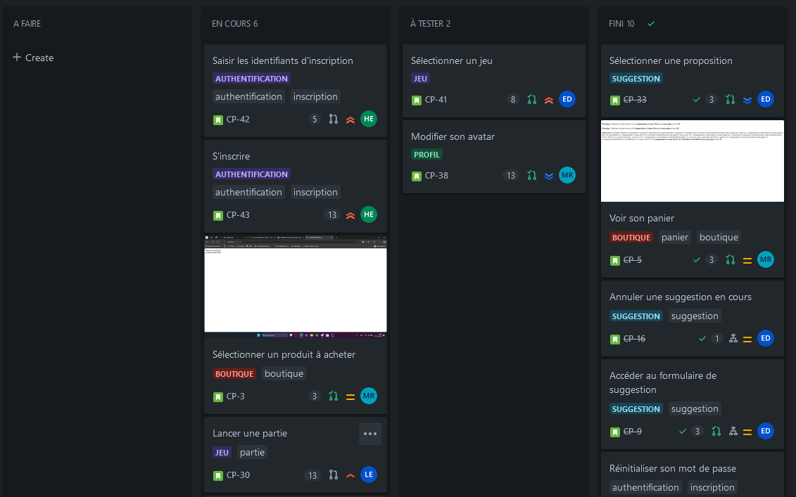
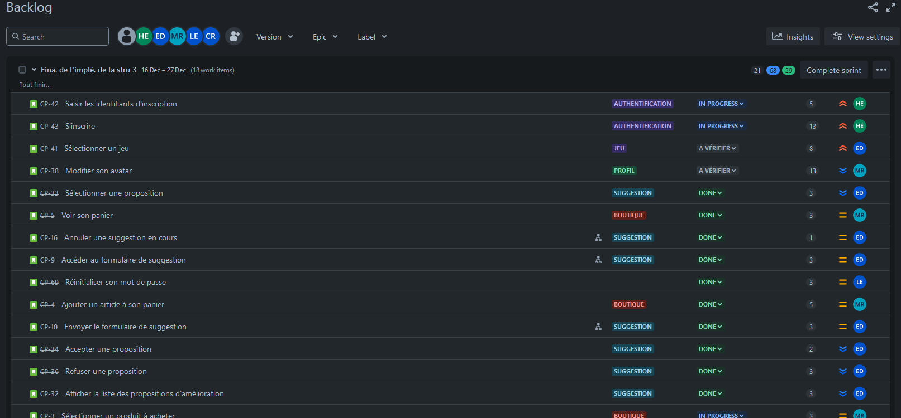
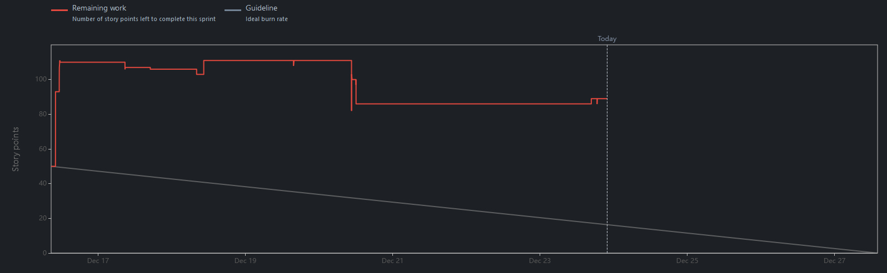
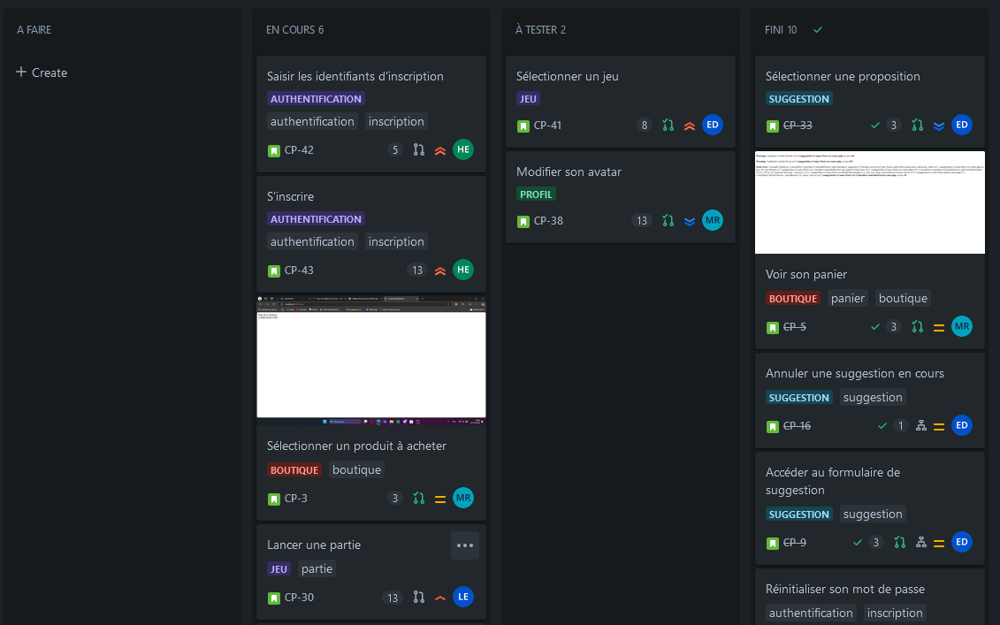
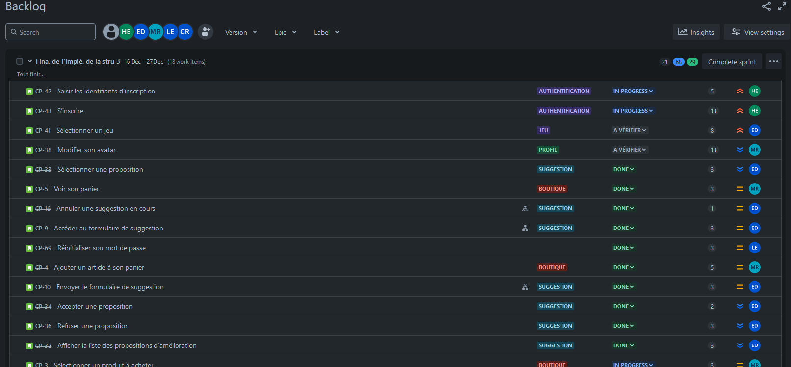
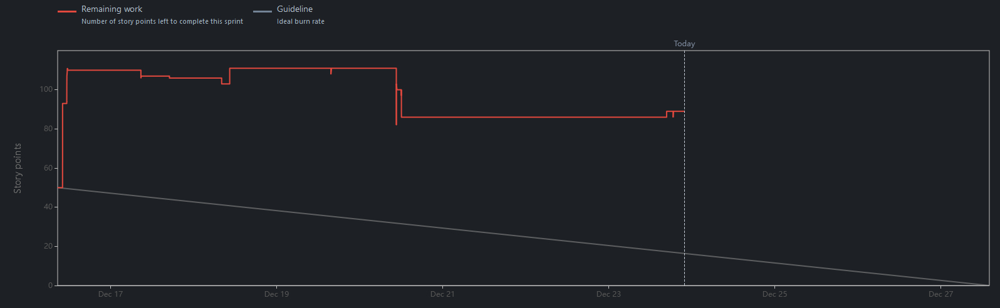

Comus Party is a web application offering many online mini-games to play. This project allowed us to discover agile methods and especially SCRUM. While the whole group was part of the development team, 2 members were also the product owner and scrum master. We did sprints, wrote the backlog and the different user stories, and organized daily meetings and retrospectives.
HTML was used with Twig to create the pages of the application. We used Twig's template inheritance for some pages (like a base layout or layouts in common for the authentication pages).
TailWindCSS was used to style the pages of the application. We created a custom theme using the TailWindCSS documentation and made a tailwind.config.js file in which we defined the colors, fonts, and other variables.
JS allowed us to interact with the pages of the application on the client side (authentication verifications, for example) as well as developing the mini-games.
PHP was used to create the back-end of the application (payments, authentication verifications, database interactions, browser sessions, mails, etc.). We used OOP and the MVC pattern to structure the code.
We used SQL to create the database of the application and manage it. In pair with the PHP, we used PDO to interact with the database.
We used NPM to install and manage the dependencies of the application with a package.json file (mainly TailWindCSS).
Composer was used to install and manage the dependencies of the application with a composer.json file. We used: phpmailer, uuid, dotenv, phpunit and twig.
Apache permitted us to serve the web application locally, providing a local server environment for development and testing.
We used Git and GitHub to manage the version control of the application. In pair with agile methods and SCRUM, we created branches for each user story and merged them when they were ready.
We used agile methods, SCRUM and Jira to manage the development of the application as well as the project itself. We used Jira to track the progress of the project with integrated tools (management of sprints, user stories, kanban board, backlog, progress charts, etc.).
 





Doxygen was used to generate the documentation of the application.
We used PHPUnit to test the application and ensure that it was working correctly.